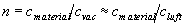
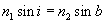
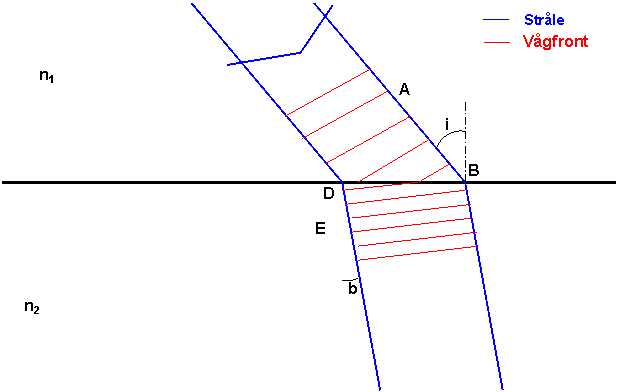
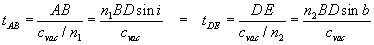

Brytningsindex, n, för ett material definieras som den faktor med vilken ljushastigheten reduceras när ljuset går in i materialet, dvs 
Detta leder till att ljuset ändrar riktning enligt

Fördjupning -Varför?
När ljuset närmar sig gränsytan med sina vågfronter vinkelräta mot
strålarna (blå ), måste vågfronten (röd ) hålla ihop genom gränsytan. Detta innebär att tiden från A till B och tiden från D till E måste vara lika:
Därefter kan man förtkorta mellan 3:e och 6:e ledet och få brytningslagen